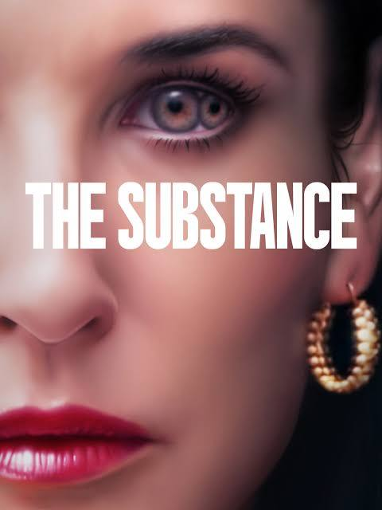
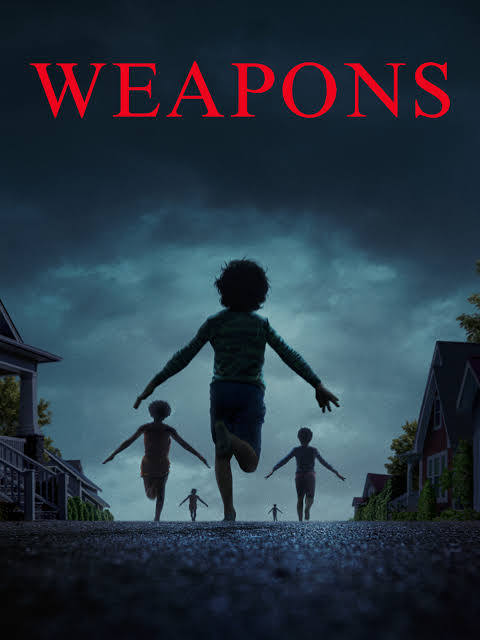
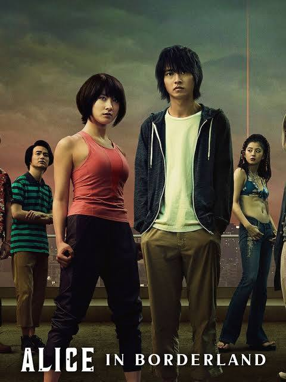
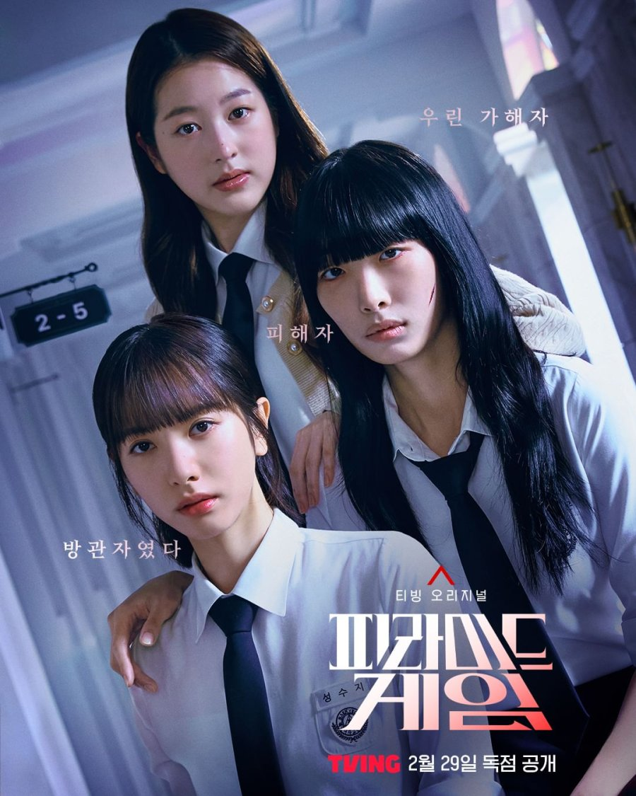

Director: Coralie Fargeat
Genre: Body Horror
Rating: 9/10
The Substance dives deep into the dark underbelly of the beauty industry, exposing how societal pressures
distort self-worth and identity. At the heart of the story is Elizabeth Sparkle, a once beloved celebrity,
who was forgotten and replaced as she aged. Her journey is both surreal and tragic, as she grapples with
the desire to get her ideal body back and the emotional (and physical!) toll that comes with it.
As Elizabeth spends more time in her "perfect" body, her real self begins to deteriorate, a haunting metaphor
for how chasing beauty can erode one's identity. The film doesn’t shy away from showing the mental, physical,
and emotional consequences of this obsession. It’s a reminder that the pursuit of perfection can be
destructive, especially when driven by external validation.
The Substance is more than just body horror. It’s a bold critique of how society treats women. It’s disturbing,
thought-provoking, and emotionally resonant. If you’re ready for a film that blends grotesque visuals with
powerful commentary, this one is definitely worth your time.

Author: Zach Cregger
Genre: Horror, Mystery, Supernatural
Rating: 7.5/10
Zach Cregger’s Weapons opens with a chilling mystery: 17 elementary school children vanish from their homes at
exactly 2:17 AM, triggering a wave of fear and confusion across their community. Throughout the film, the villain
is portrayed as incredibly powerful and menacing. That’s why the ending feels a bit rushed because she is suddenly
defeated when the children trample and tear her apart in just two minutes.
Unlike traditional horror, Weapons leans into emotional storytelling and character-driven tension. Cregger
reportedly wrote the film as a cathartic response to a close friend’s death, which adds a layer of personal grief
beneath the scares. The movie critiques societal trauma and explores identity, loss, and the cost of forgetting.
Weapons blends horror with unexpected comedy, making it a great pick for viewers who enjoy good storytelling,
and eerie stories with a few laughs. While there are a few jumpscares, it’s not overwhelmingly terrifying. So if
you’re looking for a horror film that’s creepy but not too intense, and you don’t mind a fast-paced ending,
Weapons delivers a unique experience. It’s not perfect, but it’s definitely memorable.

Director: Shinsuke Sato
Genre: Thriller, Death Game
Rating: 9.5/10
Alice in Borderland is a gripping survival series where players must beat deadly games based on playing
card suits. Each suit represent a different kind of challenge: Hearts (psychological), Diamonds (intelligence),
Clubs (teamwork), and Spades (physical). The higher the card number, the harder the game. Players must win to
extend their visa. The amount of days added to their visa depends on the number on the card. If the visa expires,
they are killed instantly. The system adds constant pressure, making every choice a fight for survival.
The games are intense and thought-provoking, and the world-building is top-tier. One standout is Chishiya,
a cold, brilliant strategist who thrives in Diamond games. His calm, calculating nature makes him one of the
most compelling characters in the series.
Beneath the action, the show explores themes of survival, identity, and morality, asking: Who do you become
when the rules of society vanish? If you love high-stakes mind games with emotional depth and stylish tension,
this one’s a must-watch.

Director: Choi Soo-yi
Genre: Psychological Thriller, Mystery
Rating: 8.5/10
Pyramid Game delivers a chilling look at high school hierarchy, where popularity can make or break you. Each
month, students vote, and the lowest-ranked girl becomes the designated outcast, facing relentless bullying.
The story follows transfer student Sung Soo-ji, who enters this twisted system and must outwit her classmates
to survive. With sharp tension and layered mystery, the show explores themes of peer pressure, systemic cruelty,
and the psychological toll of exclusion.
It’s a gripping, thought-provoking ride that turns classroom politics into a battlefield, which is perfect for
fans of dark social thrillers.
